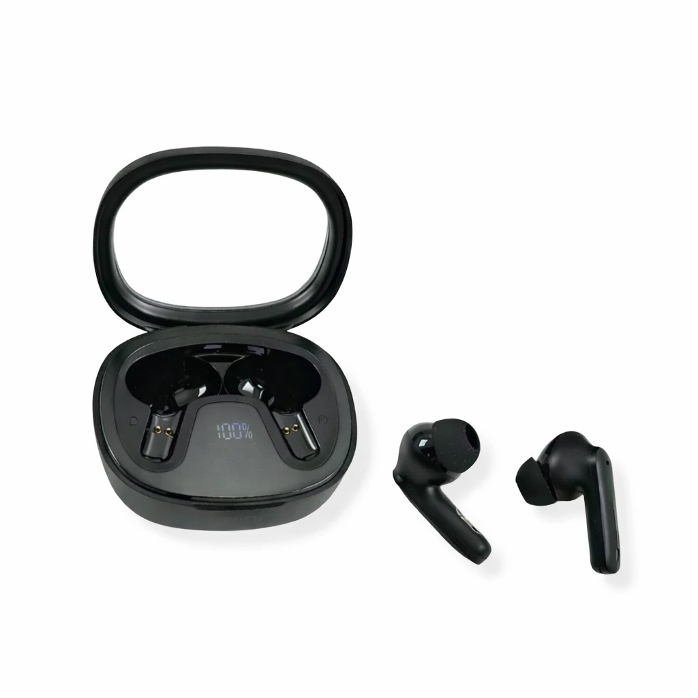

Fone de ouvido Kaidi: vale a pena?
Nesta resenha, analisamos o fone de ouvido Kaidi com foco na saúde da bateria, no conforto e no desempenho para uso diário.

O Kaidi oferece uma experiência sonora equilibrada para quem busca praticidade sem gastar muito. A autonomia é um dos pontos fortes, especialmente para usuários que passam muitas horas ouvindo música, assistindo aulas ou fazendo chamadas.
O acabamento é simples, mas confortável. Para uso prolongado, vale observar sinais de desgaste nas almofadas e no encaixe, porque esses pontos costumam afetar a experiência antes do som em si.
Pontos positivos: bateria duradoura, som competente e design confortável.
Pontos de atenção: pode apresentar desgaste após uso prolongado.